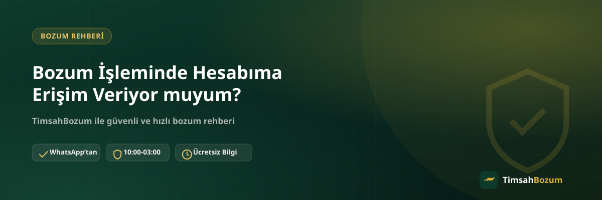

Bozum yaptırmayı düşünenlerin en sık merak ettiği konulardan biri, işlem sırasında hesabına, hattına ya da bir uygulamaya erişim vermek zorunda olup olmadığı. Bu endişe özellikle dijital işlemlerde şifre veya doğrulama kodu paylaşmanın risklerini bilenler için oldukça makul. Bu yazıda bozum sürecinde gerçekte hangi bilgilerin istendiğini, hangilerinin asla istenmediğini ve erişim talebiyle karşılaşırsan ne yapman gerektiğini adım adım anlatıyoruz.
Bozum İşlemi Sırasında Hangi Bilgiler Paylaşılır?
Bozum süreci, hesabına giriş yapılmasını değil, elindeki kod veya bakiye bilgisinin sana ait bir kanaldan iletilmesini gerektirir. Yani işlemi sen yürütürsün, karşı taraf hiçbir zaman senin adına bir hesaba veya uygulamaya giriş yapmaz. Bu ayrımı baştan bilmek, süreç boyunca hangi taleplerin normal, hangilerinin şüpheli olduğunu ayırt etmeni kolaylaştırır.
Hesabıma veya Hattıma Erişim İsteniyor mu?
Hayır. TimsahBozum hiçbir işlemde hesabına, operatör hattına veya kullandığın bir uygulamaya erişim talep etmez. Paylaşman istenen tek şey, kod tabanlı bir hizmet bozduruyorsan kodun kendisi; bakiye tabanlı bir hizmet bozduruyorsan güncel bakiyeni gösteren bir ekran görüntüsüdür. Bunların dışında bir giriş bilgisi veya uygulama erişimi hiçbir aşamada gerekmez.
SMS Doğrulama Kodu Neden İstenmez?
SMS doğrulama kodu, genellikle bir hesaba veya işleme erişim sağlamak için kullanılan hassas bir bilgidir ve bozum süreciyle hiçbir ilgisi yoktur. Hattına gelen bir doğrulama kodunu senden isteyen biri olursa bu talebi karşılamadan işlemi durdurmalısın; böyle bir istek, bozum süreci adı altında yürütülen bir dolandırıcılık girişimi olabilir.
Şifremi veya Kullanıcı Bilgilerimi Paylaşmam Gerekir mi?
Hayır, hiçbir aşamada şifre, kullanıcı adı veya benzeri bir giriş bilgisi istenmez. Bozum işlemi, senin kendi hesabın veya uygulaman üzerinden aldığın bir ekran görüntüsünü ya da elindeki kodu WhatsApp üzerinden iletmene dayanır; karşı tarafın senin hesabına doğrudan bir bağlantısı olmaz.
Üyelik, Form veya Kimlik Belgesi Gerekiyor mu?
Hayır. Üyelik oluşturmak, bir form doldurmak veya kimlik belgesi göndermek gerekmiyor. Tüm süreç WhatsApp üzerinden yazışarak ilerliyor, bu da hem işlemi hızlandırıyor hem de paylaşman gereken bilgi miktarını en aza indiriyor.
Peki Hangi Bilgiyi Paylaşmam Gerekiyor?
Bozduracağın hizmete göre paylaşman gereken bilgi değişir. Razer Gold veya iTunes gibi kod tabanlı hizmetlerde tek kullanımlık kodun kendisi yeterlidir; bu hizmetlerde kodun tam değeri tek seferde bozdurulur, kısmi bozum söz konusu değildir. Paycell, Pokus veya mobil ödeme gibi bakiye tabanlı hizmetlerde ise güncel bakiyeni gösteren okunaklı bir ekran görüntüsü yeterli olur ve bu hizmetlerde bakiyenin tamamı yerine bir kısmını da bozdurabilirsin.
Ekran Görüntüsü Paylaşmak Neden Erişim Vermek Sayılmaz?
Bir ekran görüntüsü, o anki bakiyeni gösteren statik bir görseldir; içinde şifre, oturum bilgisi veya erişim yetkisi bulunmaz. Bu yüzden ekran görüntüsü paylaşmak, karşı tarafa hesabına giriş imkânı vermek anlamına gelmez, sadece görüntüde yazan tutarı iletmiş olursun. Aynı mantık kod paylaşımı için de geçerlidir: kodun kendisi bir erişim aracı değil, tek seferlik kullanılacak bir değerdir ve paylaştığında hesabınla ilgili herhangi bir yetki devri gerçekleşmez.
Farklı Bir Cihazdan da İşlem Yapabilir misin?
Hesabına giriş yapılmadığı için işlemi hangi cihazdan yürüttüğünün bir önemi yok. Kodu veya bakiye ekran görüntüsünü telefonundan, bilgisayarından ya da başka bir cihazdan WhatsApp'a ilettiğinde süreç aynı şekilde ilerler. Önemli olan paylaşılan bilginin doğru ve güncel olması; hangi cihazdan gönderildiği işlemi etkilemez.
Erişim İstenirse Ne Yapmalısın?
Bozum işlemi kapsamında hesabına erişim, şifre veya SMS kodu talep eden biriyle karşılaşırsan bu talebi karşılamadan önce durup değerlendirmen önemli. Bu tür istekler gerçek bozum sürecinin bir parçası değildir ve genellikle kötü niyetli bir girişimin işaretidir.
Bu Talep Neden Bir Dolandırıcılık İşareti Olabilir?
Gerçek bir bozum işlemi, senin elindeki bilgiyi paylaşmana dayanır; karşı tarafın senin hesabına girmesine değil. Biri hesabına erişim, şifre veya doğrulama kodu isterse bu, kendi adına işlem yapmak veya başka bir amaçla bilgini kötüye kullanmak isteyen birinden gelen bir talep olabilir. Bu durumda bilgi paylaşmadan işlemi durdurman en doğrusu.
Resmi Hattı Nasıl Doğrularsın?
TimsahBozum adına yürütülen tüm işlemler yalnızca resmi WhatsApp hattımız olan +90 543 887 21 71 üzerinden ilerler. Farklı bir numaradan veya WhatsApp dışında bir platformdan (örneğin Instagram DM) "TimsahBozum" adına ulaşıldığını düşünüyorsan, bilgi paylaşmadan önce bu numaradan teyit almalısın. Sitede yayınlanan numara dışındaki her talep, doğrulanana kadar şüpheyle karşılanmalı.
Bozum İşlemi Nasıl İlerler?
Süreç, resmi WhatsApp hattımıza yazmanla başlar; ardından kod veya bakiye bilgini paylaşırsın, güncel oranı teyit edersin ve onay verdikten sonra ödemen WhatsApp üzerinden görüşülen yöntemle yapılır. TimsahBozum her gün 10:00 ile 03:00 arası aktif; bu saatler dışında gönderdiğin mesaj kaybolmaz, hat açıldığında sırasıyla yanıtlanır. Sürecin hiçbir adımında hesabına giriş yapılmaz, bu yüzden işlem tamamlandıktan sonra da hesabında veya hattında herhangi bir değişiklik olmaz; tek değişen, bozdurduğun kod ya da bakiye karşılığında aldığın ödemedir. Detaylı bilgi için mobil bozum hizmet sayfamıza da göz atabilirsin.
İlgili Yazılar
- Mobil Ödeme ve Bozum Dolandırıcılığından Nasıl Korunursun
- Bozum İşlemi Yaparken Nelere Dikkat Etmeli
- Bozum İşlemi Nedir, Nasıl Çalışır? (Yeni Başlayanlar İçin)
Hesabına erişim vermeden, sadece kod veya bakiye bilginle bozum işlemini başlatmak istersen WhatsApp hattımıza yazabilirsin.